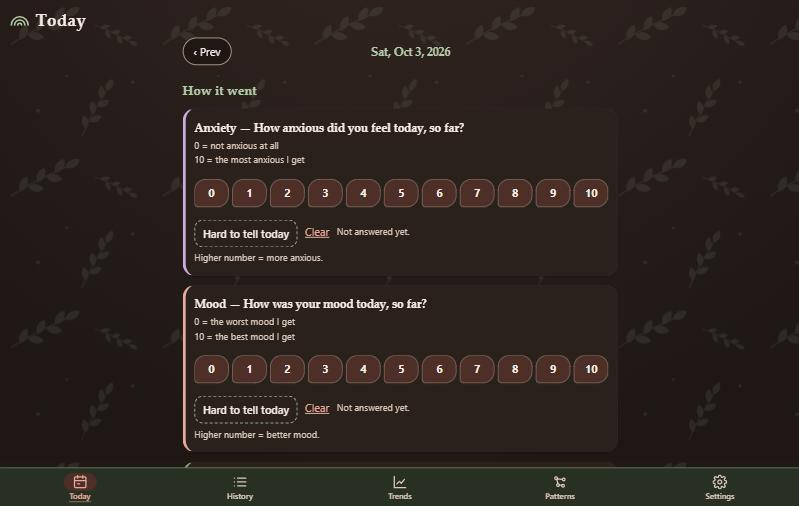

Case study
Health Log
A private wellness tracker that runs entirely in the browser, cannot make network requests, and reads a full Apple Health export without uploading a byte of it.

The goal
Health data is among the most sensitive data a person has, and most tracking apps send it to a server. I wanted a daily log I could trust, one that stays on my device by design, works offline, and can pull in years of Apple Health history without handing it to anyone.
What I built
- Five screens. Today, History, Trends, Patterns, and Settings, in roughly 9,000 lines of plain JavaScript split into 19 small modules, with no frameworks or libraries.
- Apple Health import. It reads the full "Export All Health Data" zip in the browser, plus daily CSV files from an iOS Shortcut. A custom zip reader pulls out only the pieces it needs in small slices, so even a very large export never has to be loaded into memory at once.
- Caffeine tracking. Drink presets, unit conversion, daily totals, and a baseline period, with the calculation logic kept in a pure module that has no dependence on the screen, storage, or the clock.
- Backup and restore. A versioned backup file with migration, plus clear merge rules so restoring on top of existing data behaves predictably.
- Pattern cards. Plain-language summaries of how pairs of measures move together over the last 90 days.
Decisions that mattered
- Privacy enforced by the browser, not just promised. The page's Content Security Policy blocks all network connections, so even a bug or a bad dependency could not send data anywhere.
- All-or-nothing imports. A large import is read and resolved first, then written in a single database transaction, so a failure or a cancel leaves no half-imported data behind. Big files are scanned in a Web Worker so the screen stays responsive.
- Honest statistics. Pattern cards wait for a minimum amount of data, and say "no clear pattern yet" rather than claiming there is no link, since a short history can't prove an absence.
- A repository that can't leak health data. The project's ignore rules are an allow-list of app files only, so exports, backups, and personal notes can never be committed by accident.
- Deterministic, testable logic. The core calculations, such as caffeine totals, are written as pure functions that receive dates and inputs as parameters, which keeps results reproducible and easy to test.
What shipped
The app is live on GitHub Pages, installable as an offline web app, and public on GitHub. It works without an account, a server, or a connection.
Skills this project shows
- Privacy-by-design thinking and applying browser security features (Content Security Policy)
- Working with large files: streaming reads, Web Workers, and transactional writes in IndexedDB
- Data modeling, aggregation, and communicating statistics honestly
- Structuring a larger codebase into small, single-purpose modules